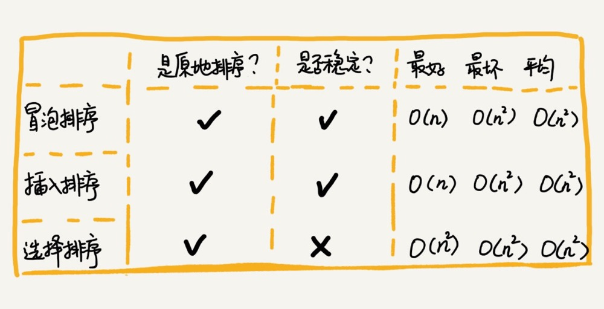
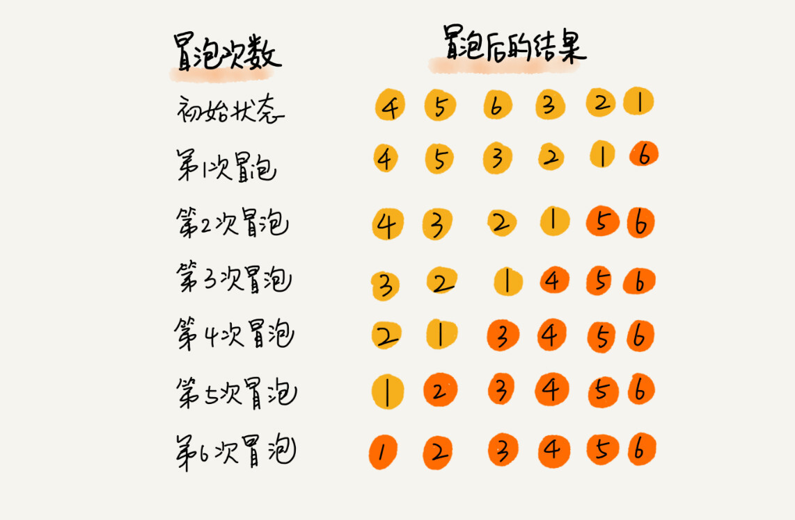
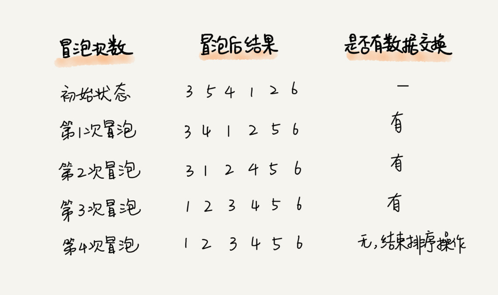
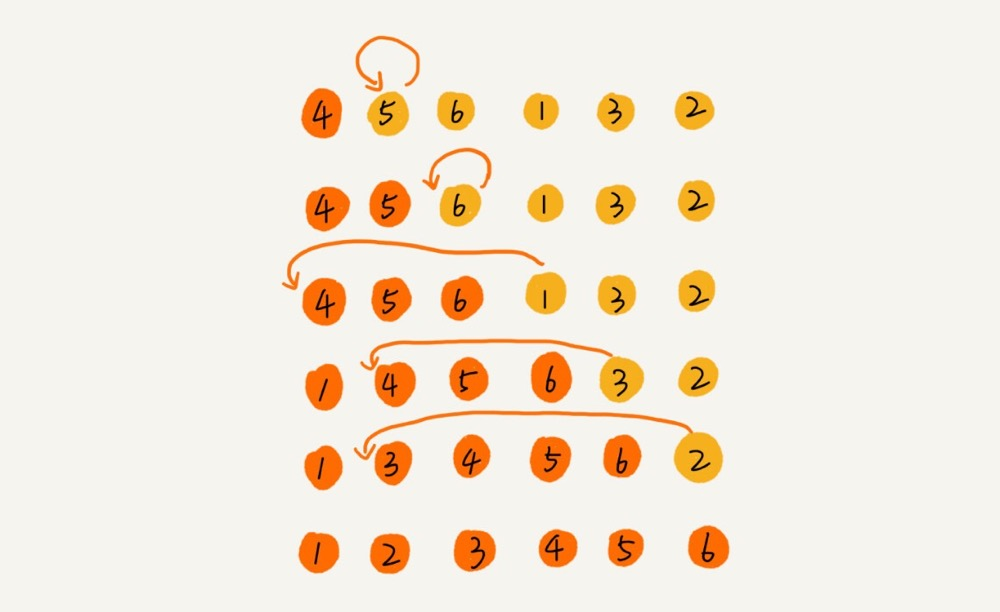
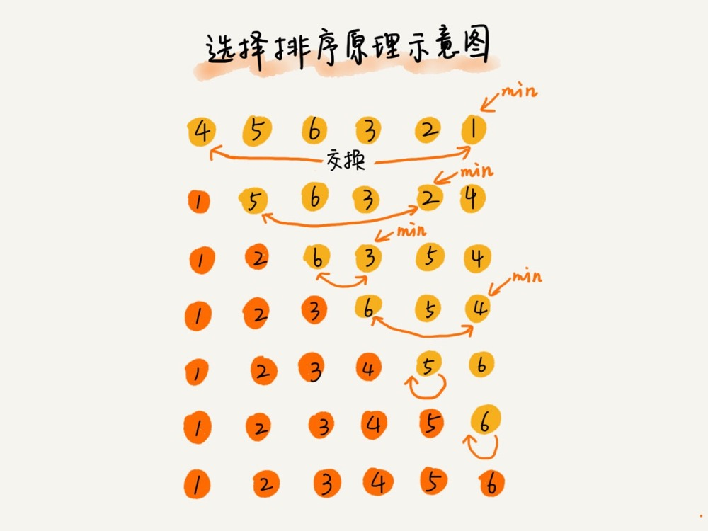

排序学习摘记（冒泡排序、插入排序、选择排序）
-

-
冒泡排序（Bubble Sort）
- 冒泡排序只会操作相邻的两个数据。每次冒泡操作都会对相邻的两个元素进行比较，看是否满足大小关系要求。
如果不满足就让它俩互换。一次冒泡会让至少一个元素移动到它应该在的位置，重复 n 次，就完成了 n 个数据的排序工作。

- 当某次冒泡操作已经没有数据交换时，说明已经达到完全有序，不用再继续执行后续的冒泡操作。(可以当作冒泡排序的优化条件)

- 最好情况时间复杂度是 O(n)，最坏情况时间复杂度为 O(n2)。
- 当数据都有序的时候，只要做一次遍历，所以最好情况时间复杂度是 O(n)。
- 平均时间复杂度 O(n2)。
- 对于包含 n 个数据的数组进行冒泡排序，平均交换次数是多少呢？ 最坏情况下，初始状态的有序度是 0，所以要进行 n*(n-1)/2 次交换。 最好情况下，初始状态的有序度是 n*(n-1)/2，不需要进行交换。 换句话说，平均情况下，需要 n*(n-1)/4 次交换操作，比较操作肯定要比交换操作多，而复杂度的上限是 O(n2)，所以平均情况下的时间复杂度就是 O(n2)。
- 示例代码：
func bubbleSort(arr []int) { for i := range arr { flag := false for j := 0; j < len(arr)-1-i; j++ { if arr[j] > arr[j+1] { arr[j], arr[j+1] = arr[j+1], arr[j] flag = true } } if !flag { break } } }
- 冒泡排序只会操作相邻的两个数据。每次冒泡操作都会对相邻的两个元素进行比较，看是否满足大小关系要求。
如果不满足就让它俩互换。一次冒泡会让至少一个元素移动到它应该在的位置，重复 n 次，就完成了 n 个数据的排序工作。
-
插入排序（Insertion Sort）
- 将数组中的数据分为两个区间，已排序区间和未排序区间。初始已排序区间只有一个元素，就是数组的第一个元素。
插入算法的核心思想是取未排序区间中的元素，在已排序区间中找到合适的插入位置将其插入，并保证已排序区间数据一直有序。
重复这个过程，直到未排序区间中元素为空，算法结束。

- 对于一个给定的初始序列，移动操作的次数总是固定的，等于逆序度。
- 最好是时间复杂度为 O(n)。最坏情况时间复杂度为 O(n2)。
- 当数据都有序的时候，只要做一次遍历，所以最好情况时间复杂度是 O(n)。
- 平均时间复杂度O(n2)。
- 在数组中插入一个数据的平均时间复杂度是O(n)。所以，对于插入排序来说，每次插入操作都相当于在数组中插入一个数据，循环执行 n 次插入操作，所以平均时间复杂度为 O(n2)。
- 可以是稳定排序，取决于元素交换的条件。
- 示例代码：
func insertionSort(arr []int) { if len(arr) < 1 { return } for i := 1; i < len(arr); i++ { val := arr[i] j := i - 1 for ; j >= 0; j-- { if arr[j] > val { arr[j+1] = arr[j] } else { break } } arr[j+1] = val } }
- 将数组中的数据分为两个区间，已排序区间和未排序区间。初始已排序区间只有一个元素，就是数组的第一个元素。
插入算法的核心思想是取未排序区间中的元素，在已排序区间中找到合适的插入位置将其插入，并保证已排序区间数据一直有序。
重复这个过程，直到未排序区间中元素为空，算法结束。
-
选择排序（Selection Sort）
- 选择排序算法分已排序区间和未排序区间，每次会从未排序区间中找到最小的元素，将其放到已排序区间的末尾。
- 选择排序每次都要找剩余未排序元素中的最小值，并和前面的元素交换位置，破坏了稳定性。

- 选择排序每次都要找剩余未排序元素中的最小值，并和前面的元素交换位置，破坏了稳定性。
- 最好情况时间复杂度、最坏情况和平均情况时间复杂度都为 O(n2)。
- 示例代码：
func selectionSort(arr []int) { for i := range arr { idx, min := i, arr[i] for j := i + 1; j < len(arr); j++ { if arr[j] < min { min = arr[j] idx = j } } arr[i], arr[idx] = arr[idx], arr[i] } }
- 选择排序算法分已排序区间和未排序区间，每次会从未排序区间中找到最小的元素，将其放到已排序区间的末尾。
-
冒泡、插入、选择 小结：
- 冒泡排序、插入排序不管怎么优化，元素交换的次数是一个固定值，是原始数据的逆序度。
- 从代码实现上来看，冒泡排序的数据交换要比插入排序的数据移动要复杂，冒泡排序需要 3 个赋值操作，而插入排序只需要 1 个。
// 冒泡排序： if a[j] > a[j+1] { a[j], a[j+1] = a[j+1], a[j] } // 插入排序 if a[j] > value { a[j+1] = a[j] } else { break } - 虽然冒泡排序和插入排序在时间复杂度上是一样的，都是 O(n2)，但是如果希望把性能优化做到极致，首选插入排序。(希尔排序是更高效的插入排序算法，但为非稳定排序)
- 对于小规模数据的排序，用起来非常高效。但是在大规模数据排序的时候，这个时间复杂度还是稍微有点高，所以更倾向于时间复杂度为 O(nlogn) 的排序算法。
-
冒泡、插入、选择排序如果使用链表实现（只能改变节点位置）。
- 冒泡排序相较于数组实现，比较次数一致，但交换操作复杂（涉及多次指针变化）。
- 插入排序相较于数组实现，比较次数一致，没有元素后移操作，找到位置后可以直接插入，但排序完毕后可能需要倒置链表。
- 选择排序相较于数组实现，比较次数一致，但交换操作复杂（涉及多次指针变化）。
综上，时间复杂度和空间复杂度并无明显变化，若追求极致性能，冒泡排序的时间复杂度系数会变大，插入排序系数会减小，选择排序无明显变化。